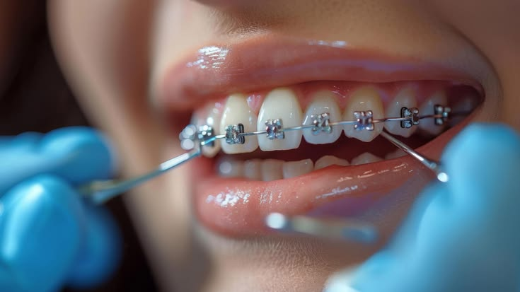
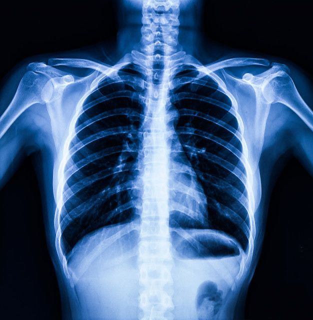

Pédiatrie
Des soins adaptés aux nourrissons, aux enfants et aux adolescents pour accompagner leur croissance.
En savoir plus →Une prise en charge adaptée à chaque patient, grâce à des services de santé variés et un accompagnement humain.
Découvrir nos servicesSantéPlus vous accompagne dans la prévention, le diagnostic et le suivi de votre santé. Découvrez nos principaux services et nos spécialités médicales.
Nous proposons différents services pour répondre aux besoins de nos patients.
Des soins adaptés aux nourrissons, aux enfants et aux adolescents pour accompagner leur croissance.
En savoir plus →
Un accompagnement spécialisé pour améliorer l'alignement des dents et la santé bucco-dentaire.
En savoir plus →
Des examens d'imagerie médicale pour aider les professionnels à établir leur diagnostic.
En savoir plus →Découvrez les spécialités proposées par notre établissement.
| N° | Spécialité | Description |
|---|---|---|
| 01 | Médecine générale | Consultations, prévention et suivi de la santé. |
| 02 | Pédiatrie | Suivi médical et soins adaptés aux enfants. |
| 03 | Imagerie médicale | Examens d'imagerie pour faciliter le diagnostic. |
| 04 | Santé bucco-dentaire | Prévention et soins pour préserver la santé des dents. |
| 05 | Soins infirmiers | Assistance et suivi des patients selon leurs besoins. |
| 06 | Urgences | Orientation et prise en charge des situations urgentes. |
Contactez notre établissement pour obtenir des informations sur nos services et les modalités de consultation.
Nous contacter